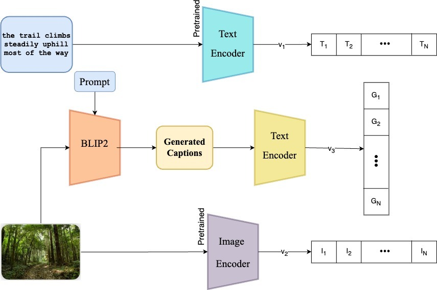

Efthymios (Themis) Tsaprazlis
PhD Student | SAIL | University of Southern California

PhD Student | SAIL | University of Southern California
I'm a Computer Science PhD student at University of Southern California and a graaduate research assistant at Signal Analysis and Interpretation Lab (SAIL) , under the supervision of Professor Shrikanth Narayanan. Previously, I did my Bachelors in the ECE Departement at National Technical University of Athens where I worked with Professor Petros Maragos. Also, I was an external collaborator of the Machine Learning Lab at Univerity of Texas at Austin, where I worked with Professor Alex Dimakis .
Computer Vision
Natural Language Processing (NLP)
Contrastive Learning
Privacy in AI
• [Aug 2024] I started my PhD at University of Southern California.
• [Jan 2024] I started a new position as Research Assistant in Robotics Unit of the Athena Research and Innovation Center (Athena RC) and CVSP Group.
• [Oct 2023] Our paper "Enhancing CLIP with a Third Modality" got accepted in NeurIPS 2023 Workshop: Self-Supervised Learning - Theory and Practice.
• [Oct 2023] I joined Workable as a Machine Learning Engineer intern.
|  |
Enhancing CLIP with a Third Modality Efthymios Tsaprazlis, Georgios Smyrnis, Alexandros G. Dimakis, Petros Maragos, NeurIPS Workshop: Self-Supervised Learning - Theory and Practice, 2023 |
You can reach me via email at tsaprazl@usc.edu or connect with me on LinkedIn.